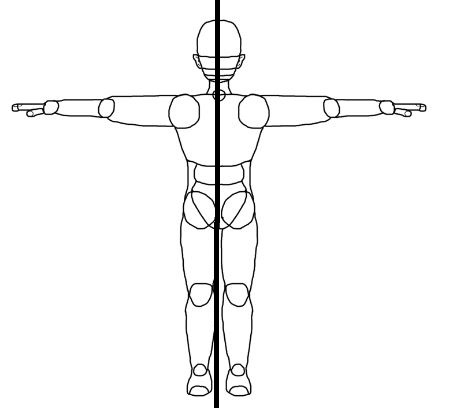
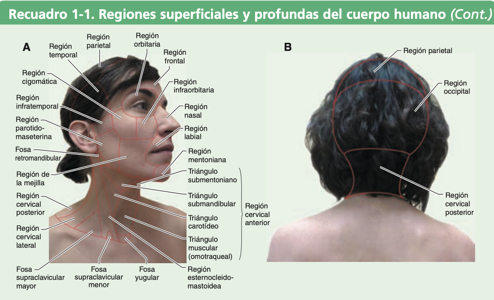
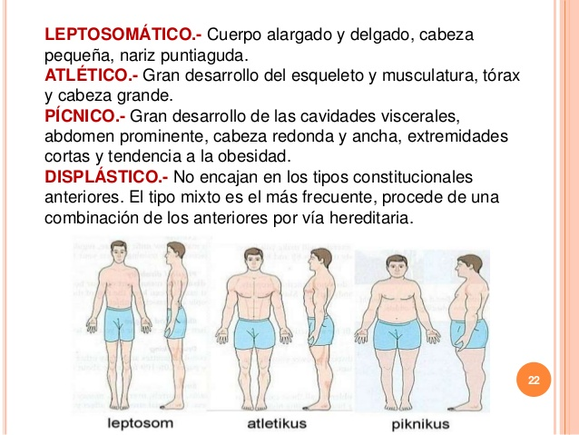
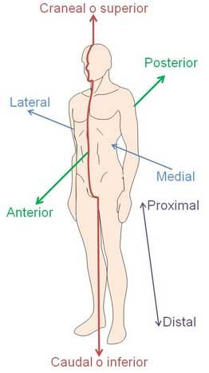
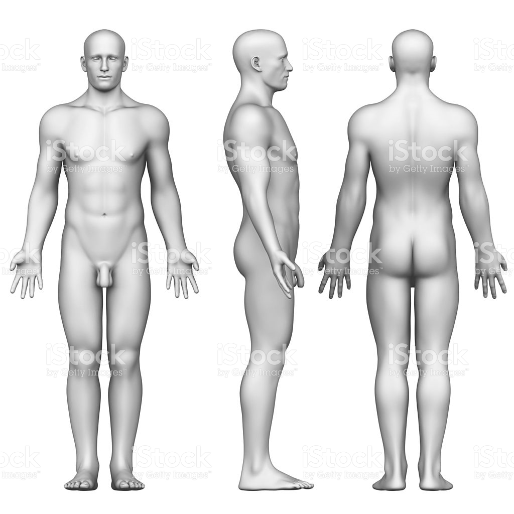
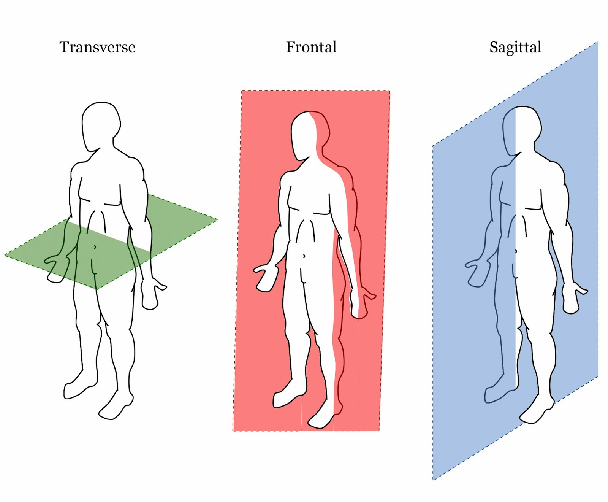
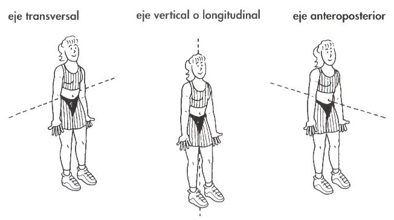

ClinicusMed · Dossiê Clinicus — Padrão de Excelência
A anatomia possui uma linguagem PRÓPRIA, destinada a facilitar a comunicação e compreensão entre profissionais de saúde ao redor do mundo. Esses termos técnicos servem pra DEFINIR, LOCALIZAR e ORIENTAR cada parte do organismo.

| Abordagem | O que faz |
|---|---|
| Descritiva | Descreve e mostra a organização das estruturas |
| Topográfica | Expõe a disposição recíproca entre estruturas nas diferentes regiões |
| Funcional | Indica as relações entre forma e função |
O corpo humano possui mais de 50 BILHÕES de células. Estas se agrupam em TECIDOS, que se organizam em ÓRGÃOS, e estes em 8 APARELHOS OU SISTEMAS:


Classificação morfológica que descreve os diferentes biotipos corporais — usada como referência descritiva geral em anatomia e clínica.

| Termo | Significado |
|---|---|
| Anterior (ventral) | Em posição adiantada/precedente |
| Posterior (dorsal) | Atrás, com posterioridade de lugar |
| Superior | Localizado acima |
| Inferior | Localizado abaixo |
| Craneal | Mais próximo do extremo superior do tronco (rumo ao crânio) |
| Caudal | Mais próximo do extremo inferior do tronco (do latim "cauda" = cauda) |
| Medial | Rumo ao plano sagital mediano |
| Lateral | Afastado do plano sagital mediano |
| Proximal | Mais perto do tronco ou ponto de origem |
| Distal | Mais longe do tronco ou ponto de origem |
| Superficial | Mais perto da superfície |
| Profundo | Mais longe da superfície |
| Externo | Mais afastado do centro de um órgão |
| Interno | Mais próximo do centro de um órgão |
| Ipsilateral (homolateral) | Do mesmo lado do corpo |
| Contralateral | Do lado oposto do corpo |


| Plano | Divide o corpo em |
|---|---|
| Sagital | Metades direita e esquerda (o sagital MEDIANO divide em partes exatamente iguais) |
| Frontal (Coronal) | Porções anterior e posterior |
| Transversal (Horizontal) | Porções superior e inferior |

| Eixo | Direção |
|---|---|
| Longitudinal (Vertical) | Craniocaudal (cabeça-pé) |
| Transversal (Horizontal) | Látero-lateral (lado a lado) |
| Sagital | Ântero-posterior (frente-trás) |
Vamos acompanhar um estudante de medicina interpretando seu primeiro laudo de tomografia, aplicando a terminologia anatômica padronizada. O caso evolui em 3 níveis — clica em cada um pra ver como as coisas vão se desenrolando.
O sistema guarda, no seu navegador, quais cards você já sabe bem e quais precisam voltar mais cedo — cada vez que você avalia um card, ele recalcula quando ele deve voltar.
10 questões, do mais básico ao mais puxado. Escolhe uma alternativa, depois clica em "Ver comentário completo" — vale a pena ler até quando você acerta, porque o comentário explica cada alternativa, não só a certa.